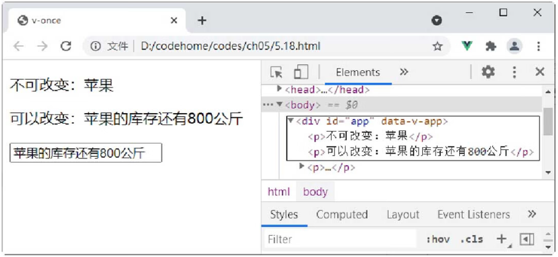

首页 > 编程笔记
Vue v-once命令的用法
Vue 中的 v-once 指令不需要表达式。v-once 指令只渲染元素和组件一次，随后的渲染使用了此指令的元素、组件及其所有的子节点，都会当作静态内容并跳过，这个特点可以用于优化更新性能。
例如，在下面的示例中，当修改 input 输入框的值时，使用了 v-once 指令的 p 元素不会随之改变，而第二个 p 元素会随着输入框的内容而改变。
示例：Vue v-once指令的使用。
例如，在下面的示例中，当修改 input 输入框的值时，使用了 v-once 指令的 p 元素不会随之改变，而第二个 p 元素会随着输入框的内容而改变。
示例：Vue v-once指令的使用。
<div id="app">
<p v-once>不可改变：{{message}}</p>
<p>可以改变：{{message}}</p>
<p><input type="text" v-model = "message" name=""></p>
</div>
<!--引入Vue文件-->
<script src="https://unpkg.com/vue@next"></script>
<script>
//创建一个应用程序实例
const vm= Vue.createApp({
//该函数返回数据对象
data(){
return{
message:"苹果"
}
}
//在指定的DOM元素上装载应用程序实例的根组件
}).mount('#app');
</script>
在 Chrome 浏览器中运行程序，然后在输入框中输入“苹果的库存还有800公斤”，可以看到，添加 v-once 指令的 p 标签并没有任何变化，效果如图1所示。

图1：Vue 中 v-once 指令的演示
图1：Vue 中 v-once 指令的演示
关注公众号「站长严长生」，在手机上阅读所有教程，随时随地都能学习。内含一款搜索神器，免费下载全网书籍和视频。

微信扫码关注公众号